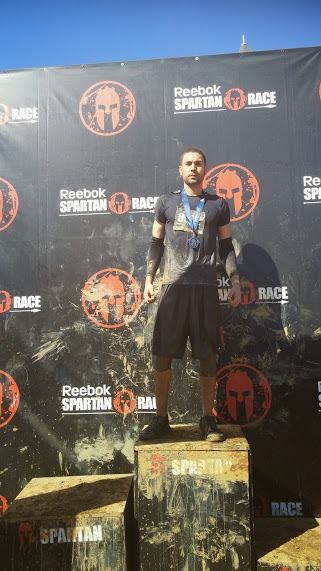
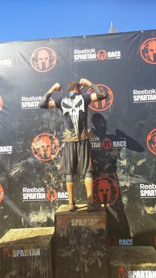
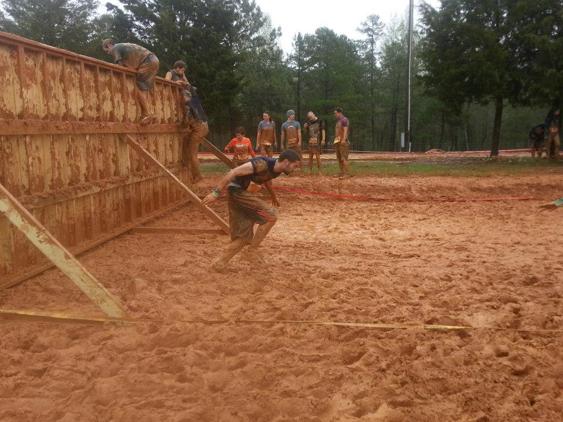
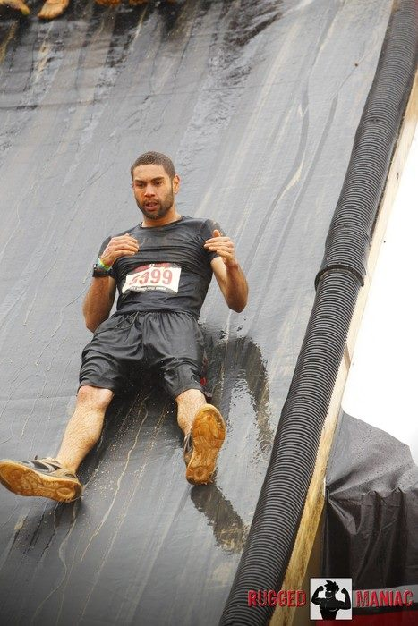
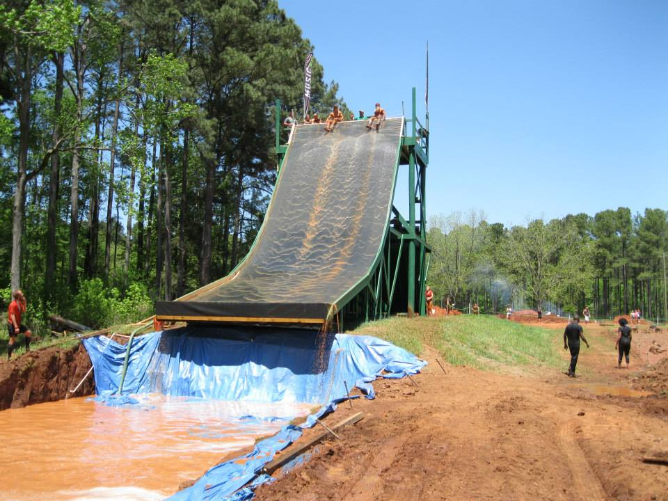

My Hobbies

Hello welcome to my hobbies page. One of my favorite hobby is obstacle course racing also known as mud races. One of the most popular mud races around is called the spartan race. They are popular because they have events in mostly ever state. Most mud races consist of obstacle like, the 10 ft wall, rope clime, bar-wire crawl, balance beam and of course lot of slippery mud. I have been doing mud races for over 5 years and it a good way to stay in shape and to push one’s limit.




